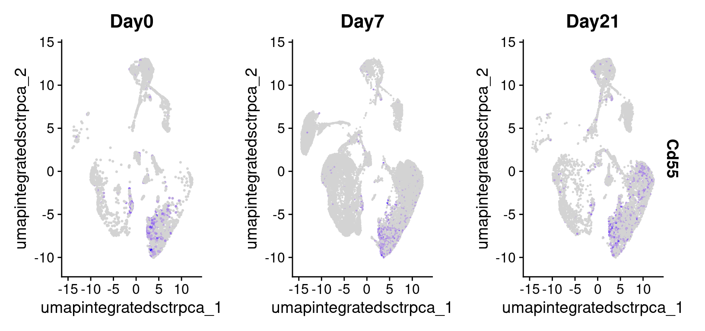

Differential Expression Analysis
UM Bioinformatics Core Workshop Team
2025-01-26
Workflow Overview

Introduction
Differential expression comparison is a key step to addressing the biological question at hand for the experiment, namely what genes might be contributing to the aberrant bone formation during healing that was observed in this experiment.

|
|
A. For differential expression, we consider a single cluster at a time.
B. For the cluster of interest, the cells are partitioned into case vs control (or other appropriate groupings) and expression compared across all genes. C. Comparisons produce lists and visualizations of differently expressed genes across conditions. |
As a reminder, our data includes cells isolated from issue from day 0 (prior to injury) as controls, and days 7 and 21 post-injury as experimental conditions.

We already introduced DE comparisons in the marker identification section of this workshop, but here we will show how to run comparisons between experimental conditions for each annotated cluster.
Objectives
- Run cell-level differential expression comparisons
- Run sample level differential expression comparisons
Differential Expression
For single-cell data there are generally two types approaches for running differential expression - either a cell-level or sample-level approach.
For cell-level comparisons, simpler statistical methods like a t-test or the Wilcoxon rank-sum test or single-cell specific methods that models cells individually like MAST can be used.
As mentioned earlier, many of the tools developed for bulk RNA-seq have been shown to have good performance for single-cell data, such as EdgeR or DESeq2, particularly when the count data is aggregated into sample-level “pseudobulk” values for each cluster source.
As discussed in the single-cell best practices book and in the Ouyang Lab’s marker gene identification materials, there are active benchmarking efforts and threshold considerations for single-cell data.
Standard comparisons
First we’ll run cell-level comparisons for our data for the pericyte
cluster, starting with cells from the D21 vs D7 conditions. We’ll need
to ensure our cells are labeled to reflect both the cluster and
condition identities before running our comparison using
FindMarker() and summarizing the results:
##### Day 3 - Differential Expression Analysis
# Make a day-celltype contrast --------------------------------------------
# set up combined label of day + celltype & assign as identities
geo_so$day.celltype = paste(geo_so$day, geo_so$cell_type, sep = '_')
# check labels
unique(geo_so$day.celltype)##### Day 3 - Differential Expression Analysis
# Make a day-celltype contrast --------------------------------------------
# set up combined label of day + celltype & assign as identities
geo_so$day.celltype = paste(geo_so$day, geo_so$cell_type, sep = '_')
# check labels
unique(geo_so$day.celltype) %>%
kable("html") %>%
kable_styling(font_size = 14,
html_font = '"Arial Narrow", arial, helvetica, sans-serif') %>%
scroll_box(height='400px', width='100%')| x |
|---|
| Day0_Fibroblast |
| Day0_Macrophage |
| Day0_Hematopoietic Stem Cell |
| Day0_Endothelial |
| Day0_Hematopoietic stem cell |
| Day0_Inflammatory macrophage |
| Day0_Erythroid |
| Day0_Mesenchymal stem/stromal cell |
| Day0_Unknown |
| Day0_Pericyte |
| Day0_NA |
| Day0_Regulatory T Cell |
| Day0_Muscle Progenitor Cell |
| Day0_Dendritic Cell, Progenitor Cell |
| Day7_Hematopoietic Stem Cell |
| Day7_Inflammatory macrophage |
| Day7_Hematopoietic stem cell |
| Day7_Fibroblast |
| Day7_Macrophage |
| Day7_Muscle Progenitor Cell |
| Day7_Pericyte |
| Day7_Endothelial |
| Day7_Mesenchymal stem/stromal cell |
| Day7_Unknown |
| Day7_Erythroid |
| Day7_Regulatory T Cell |
| Day7_NA |
| Day7_Dendritic Cell, Progenitor Cell |
| Day21_Mesenchymal stem/stromal cell |
| Day21_Hematopoietic stem cell |
| Day21_Inflammatory macrophage |
| Day21_Fibroblast |
| Day21_Pericyte |
| Day21_Hematopoietic Stem Cell |
| Day21_Endothelial |
| Day21_Macrophage |
| Day21_Regulatory T Cell |
| Day21_Unknown |
| Day21_NA |
| Day21_Muscle Progenitor Cell |
| Day21_Erythroid |
| Day21_Dendritic Cell, Progenitor Cell |
# Consider pericyte cluster D21 v D7 --------------------------------------
# Reset cell identities to the combined condition + cluster label
Idents(geo_so) = 'day.celltype'
# run comparison for D21 vs D0, using wilcoxon test
de_cell_pericyte_D21_vs_D7 = FindMarkers(
object = geo_so,
slot = 'data', test = 'wilcox',
ident.1 = 'Day21_Pericyte', ident.2 = 'Day7_Pericyte')
head(de_cell_pericyte_D21_vs_D7) p_val avg_log2FC pct.1 pct.2 p_val_adj
Prelp 0.000000e+00 2.7519232 0.723 0.188 0.000000e+00
Fmod 5.075467e-303 2.3820076 0.884 0.466 1.038847e-298
Gm10076 4.600916e-296 -1.1699098 0.829 0.966 9.417154e-292
Tpt1 5.050892e-287 0.7906098 0.996 0.983 1.033817e-282
Cilp2 1.168302e-282 5.8680547 0.391 0.012 2.391281e-278
Wfdc1 1.746707e-261 6.7255238 0.341 0.004 3.575160e-257# Add gene symmbols names and save ----------------------------------------
# Add rownames as a column for output
de_cell_pericyte_D21_vs_D7$gene = rownames(de_cell_pericyte_D21_vs_D7)
# save
write_csv(de_cell_pericyte_D21_vs_D7,
file = 'results/tables/de_standard_pericyte_D21_vs_D7.csv')
# summarize diffex results
table(de_cell_pericyte_D21_vs_D7$p_val_adj < 0.05 &
abs(de_cell_pericyte_D21_vs_D7$avg_log2FC) > 1.5)
FALSE TRUE
9201 560 In the first 3 lines of the above code block we can see the changes to the schematic:

Note - the avg_log2FC threshold of 1.5 we use here are
quite stringent as the default log2FC threshold for the function is
0.25. However the default threshold corresponds to only a 19% difference
in RNA levels, which is quite permissive.
If there is enough time - we can also compare between cells from the D7 and D0 conditions.
# Compare pericyte cluster D7 v D0 ----------------------------------------
de_cell_pericyte_D7_vs_D0 = FindMarkers(
object = geo_so,
slot = 'data', test = 'wilcox',
ident.1 = 'Day7_Pericyte', ident.2 = 'Day0_Pericyte')
head(de_cell_pericyte_D7_vs_D0) p_val avg_log2FC pct.1 pct.2 p_val_adj
Cilp2 0.000000e+00 -8.095692 0.012 0.806 0.000000e+00
Ptx4 0.000000e+00 -7.562260 0.005 0.613 0.000000e+00
Chad 0.000000e+00 -10.353040 0.002 0.516 0.000000e+00
Chodl 1.644012e-291 -7.469636 0.005 0.597 3.364963e-287
Crispld1 5.369100e-160 -7.399560 0.009 0.452 1.098947e-155
Dapk2 5.801753e-137 -6.348279 0.006 0.355 1.187503e-132# Add rownames as a column for output
de_cell_pericyte_D7_vs_D0$gene = rownames(de_cell_pericyte_D7_vs_D0)
# summarize results
table(de_cell_pericyte_D7_vs_D0$p_val_adj < 0.05 &
abs(de_cell_pericyte_D7_vs_D0$avg_log2FC) > 1.5)
FALSE TRUE
10852 1048 This same approach can be extended to run pairwise comparisons between conditions for each annotated cluster of interest.
Pseudobulk comparisons
With advances in the technology as well as decreased sequencing costs allowing for larger scale single-cell experiments (that include replicates), along with a study by Squair et al (2021) that highlighted the possibility of inflated false discovery rates for the cell-level approaches since cells isolated from the same sample are unlikely to be statistically independent source the use of sample-level or “psuedobulk” can be advantageous.
We’ll run psuedobulk comparisons for our data for the monocyte
cluster, starting with the D21 vs D0 conditions. We’ll need to generate
the aggregated counts first (ensuring that we are grouping cells by
replicate labels), before labeling the cells to reflect the cluster and
condition. Then we will run our comparison using
FindMarker() but specifying DESeq2 as our method before
summarizing the results:
# Create pseudobulk object -------------------------------------------------
pseudo_catch_so = AggregateExpression(geo_so, assays = 'RNA', return.seurat = TRUE, group.by = c('cell_type', 'day', 'replicate'))
# Set up labels to use for comparisons & assign as cell identities
pseudo_catch_so$day.celltype = paste(pseudo_catch_so$day, pseudo_catch_so$cell_type, sep = '_')
Idents(pseudo_catch_so) = 'day.celltype'
# Run pseudobulk comparison between Day 21 and Day 0, using DESeq2
de_pseudo_pericyte_D21_vs_D7 = FindMarkers(
object = pseudo_catch_so,
ident.1 = 'Day21_Pericyte', ident.2 = 'Day7_Pericyte',
test.use = 'DESeq2')
# Take a look at the table
head(de_pseudo_pericyte_D21_vs_D7) p_val avg_log2FC pct.1 pct.2 p_val_adj
Cilp2 5.586571e-220 2.876621 1 1 1.479827e-215
Wfdc1 2.769347e-155 1.972374 1 1 7.335723e-151
Cd55 6.226585e-127 1.370951 1 1 1.649360e-122
Prss23 7.185094e-107 1.668341 1 1 1.903259e-102
Ltbp4 1.161457e-101 1.769227 1 1 3.076583e-97
Col8a1 1.834606e-91 1.659678 1 1 4.859688e-87# Add genes and review pseudobulk results ----------------------------------
# Add rownames as a column for output
de_pseudo_pericyte_D21_vs_D7$gene = rownames(de_pseudo_pericyte_D21_vs_D7)
# save results
write_csv(de_pseudo_pericyte_D21_vs_D7,
file = 'results/tables/de_pseudo_pericyte_D21_vs_D7.csv')
# look at results, using the same thresholds
table(de_pseudo_pericyte_D21_vs_D7$p_val_adj < 0.05 &
abs(de_pseudo_pericyte_D21_vs_D7$avg_log2FC) > 1.5)
FALSE TRUE
23701 60 Since we’re working with pseudobulk data, unlike in the marker identification section, there is no percentage of cells expressing to need to represent so we can summarize our DE results with a volcano plot:
# Make a volcano plot of pseudobulk diffex results ------------------------
pseudo_pericyte_D21_vs_D7_volcano = ggplot(de_pseudo_pericyte_D21_vs_D7, aes(x = avg_log2FC, y = -log10(p_val))) + geom_point()
ggsave(filename = 'results/figures/volcano_de_pseudo_pericyte_D21_vs_D0.png',
plot = pseudo_pericyte_D21_vs_D7_volcano, width = 7, height = 7, units = 'in')
pseudo_pericyte_D21_vs_D7_volcano
Further examining DE results
We can also overlay the expression of interesting differentially
expressed genes back onto our UMAP plots to highlight the localization
and possible function, again using the FeaturePlot
function.
# UMAP feature plot of Cd55 gene ------------------------------------------
FeaturePlot(geo_so, features = "Cd55", split.by = "day") So we found Cd55 based on differential expression comparison in the Pericyte population between Day 7 and Day 21 but in looking at the Feature plot of expression, we also see high expression in a subset of cells on Day 0. This interesting, since according to Shin et al (2019), CD55 regulates bone mass in mice.
It also looks like there is a high percentage of expression in some of the other precursor populations on the top right of our plots, which is interesting and might suggest an interesting subpopulation that we might try to identify, particularly given the role of this gene and our interest in determining why abberant bone can form after injury.
Next steps
While looking at individual genes can reveal interesting patterns like in the case of Cd55, it’s not a very efficient process. So after running ‘standard’ and/or psuedobulk differential expression comparisons, we can use the same types of tools used downstream of bulk RNA-seq to interpret these results, such as GO term enrichment, KEGG pathway enrichment, and GSEA with mSigDB.
Save our progress
# Discard all ggplot objects currently in environment ---------------------
# Ok since we saved the plots as we went along
rm(list=names(which(unlist(eapply(.GlobalEnv, is.ggplot)))));
gc() used (Mb) gc trigger (Mb) max used (Mb)
Ncells 9147714 488.6 17652560 942.8 17652560 942.8
Vcells 346129712 2640.8 1061378229 8097.7 1112382295 8486.9We’ll save the scCATCH object. The Seurat object has not been changed in this module.
# Save Seurat object ------------------------------------------------------
saveRDS(geo_so, file = 'results/rdata/geo_so_sct_integrated_final.rds')Downstream approaches
Beyond differential expression within clusters and , there are many other possible avenues of exploration and analysis for scRNA-seq data. Including, but not limited to:
Integration with other modalities (e.g. ATAC-seq, VDJ, etc.)
Subclustering clusters of interest, see HBC’s summary on subclustering, Seurat’s findSubcCluster documentation and this related issue thread
Trajectory or Pseudotime analysis, seeOuyang Lab’s trajectory analysis or Broad Institute’s materials on trajectory analysis, among other resources
Cell - Cell communication network inference, see review by Wilk et al (2023)
Velocity analysis (note: not compatible with the flex probe based kits), see the chapter from the single-cells best practices book for detailed theory/modeling or the 10x data vignette for velocyto for a practical example in R
We would recommend looking for studies in similar tissues or experimental questions and see what kind of approaches and tools were used to answer questions related to your biological question
Summary
Reviewing these results should allow us to identify genes of interest that are impacted by injury and in the context of the cell-types in which they are differentially expressed, formalize some hypotheses for what cell-types or biological processes might be contributing to aberrant bone formation.
These materials have been adapted and extended from materials listed above. These are open access materials distributed under the terms of the Creative Commons Attribution license (CC BY 4.0), which permits unrestricted use, distribution, and reproduction in any medium, provided the original author and source are credited.
| Previous lesson | Top of this lesson | Workshop Wrap Up |
|---|